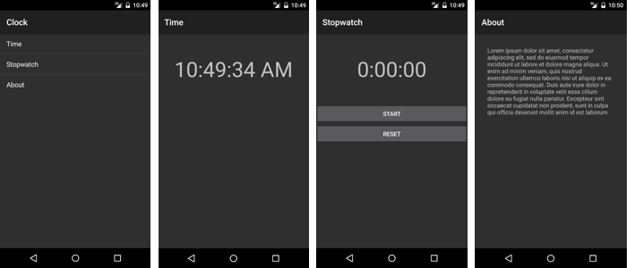

Duration
10 minutes
Lab Goals
The primary goal of this lab is to add Stack Navigation to a partially-written app. You will be working on a Clock app that provides the four pages shown below: main, current time, stopwatch, and about. The individual pages of the app are supplied; your job is to build the main navigation structure. Notice the list-view in the first screenshot. Clicking one of the items in the list will navigate to the appropriate page; that is the key thing you will be coding.
Required assets
The provided Resources folder for this exercise contains a subfolder named Start that contains the app you will use. There is also a Completed folder with a solution you can use to check your work. Please make sure you have these folders before you begin.
Challenge
You can use the high-level description here to work through the lab on your own. Alternatively, you can use the instructions below if you would like step-by-step guidance.
- Open the provided Clock solution.
- Open MainActivity.cs.
-
Complete the implementation of the
OnMenuClickmethod. Use anIntentto navigate to the appropriate Activity based on which menu-item was clicked. - Run the app to test your work.
Steps
Below are the step-by-step instructions to implement the exercise.
Examine the starter code
The supplied code implements the entire Clock app except for the Stack Navigation part. Before you begin coding, the steps here will lead you through an examination of a few key parts of the provided code.
- Open the Clock solution from the Lab.Start folder.
- Open Resources/layout/Time.axml in source-code view.
-
Notice that the UI to display the current time is just a
TextView. The string it displays is updated every second from the code-behind. - Open TimeActivity.cs.
-
Note that the
TimeActivityis an Activity. The implementation uses a timer to update the UI once per second. -
The other Activities (
StopwatchActivityandAboutActivity) are similar. If you have extra time, feel free to examine them; however, there is nothing there that you need to know to continue with the exercise. - Open Resources/layout/Main.axml in source-code view.
-
Notice the
ListView. This is the navigation "menu". - Open MainActivity.cs.
-
The
OnCreatemethod initializes theListViewso it has one entry for each of the three app functions: time, stopwatch, and about. When the user clicks on one of the list items, you will need to write code to navigate the app to the corresponding activity.
Implement Stack Navigation
Here you will code Stack Navigation. You will create an Intent and start an Activity when the user clicks on the navigation menu.
-
Open MainActivity.cs and locate the
OnMenuClickmethod. All your work will be done inside this method. -
The
ListViewwill pass you the index of the clicked item in thePositionproperty of the EventArgs. You will need to retrieve this value so you can decide which Activity you will navigate to. -
Create an
Intentto navigate to the Activity the user selected. TheIntentclass has several constructors; you should use the version that takes two arguments: aContext(your Activity is aContext) and aType. Pass a differentTypeobject based on the value of thePositionproperty in the EventArgs. Below is some generic code that shows how to create anIntent.var intent = new Intent(this, typeof(TargetActivity));
-
Call the
StartActivitymethod and pass it theIntent. - Run the app to test your work. Click on one of the items in the list. Use the Android Back button to return to the Main screen.
Summary
This lab asked you to use Activities and Intents to implement Stack Navigation.
Creating an Intent and calling StartActivity performed forward navigation.
The new Activity was automatically added to the Android back-stack. The Android
Back button automatically returned your app to the previous Activity (i.e. it
popped the back-stack). This built-in support makes it possible to implement Stack
Navigation with very little code.